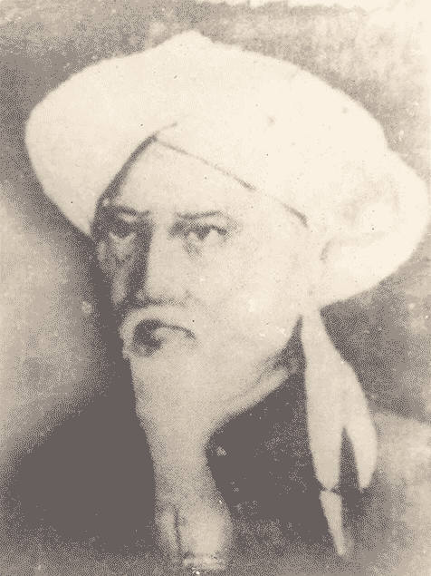

ج٢/ص٥٧ :
(دان سنة)
تكبير بڬ يڠتياد مڠرجاكن فكرجائن حج مولا ٢ درفد صبح هارى عرفة يائت يڠ كسمبيلن هڠڬ عصر كسداهن هارى تشريق
Transliterasi:
(Dan sunnah) Takbir bagi yang tiada mengerjakan pekerjaan haji, mula-mula daripada subuh hari Arafah yaitu yang ke sembilan hingga Ashar kesudahan hari Tasyriq.
(1/ 276 ط الفكر)
وقد روي عن السلف أنه كان يبتدئ التكبير خلف صلاة الصبح من يوم عرفة، وأسأل الله تعالى التوفيق
Terjemah:
"Telah diriwayatkan dari sebagian ulama salaf (generasi awal Islam) bahwa mereka mulai mengumandangkan takbiran setiap selesai shalat Subuh pada hari Arafah (9 Dzulhijjah). Dan saya memohon petunjuk serta taufik kepada Allah Ta'ala."
(2/ 499)
وَالْقَوْلُ الثَّالِثُ: إِنَّهُ يِبْتَدِئُ بِالتَّكْبِيرِ مِنْ بَعْدِ صَلَاةِ الصُّبْحِ مِنْ يَوْمِ عَرَفَةَ إِلَى بَعْدِ صَلَاةِ الْعَصْرِ مِنْ آخِرِ التَّشْرِيقِ، وَوَجْهُهُ أَنْ يُقَالَ: لِأَنَّ يَوْمَ عَرَفَةَ يُخْتَصُّ بِرُكْنٍ مِنْ أَرْكَانِ الْحَجِّ فَوَجَبَ أَنْ يَكُونَ التَّكْبِيرُ فِيهِ مَسْنُونًا كَيَوْمِ النَّحْرِ.
Terjemah:
"Pendapat ketiga menyatakan: Sesungguhnya waktu takbiran dimulai setelah selesai shalat Subuh pada hari Arafah (9 Dzulhijjah) sampai selesai shalat Ashar pada hari terakhir hari tasyrik (13 Dzulhijjah). Alasan argumen ini adalah: karena hari Arafah memiliki keistimewaan dengan adanya ibadah wukuf (salah satu rukun haji yang agung), maka ibadah takbiran pun pasti disunnahkan di dalamnya, sama seperti pada hari raya Idul Adha (hari Nahar)."
(2/ 366)
أنهم يبتدءون عقيب الصبح يوم عرفة ويختمونه عقيب العصر آخر أيام التَّشريق خلف ثلاث وعشرين صلاة لما روى أنه: "كَبَّرَ بَعْدَ صَلَاةِ الصُّبْحِ يَوْمَ عَرَفَةَ، وَمَدَّ التَّكْبِيرَ إِلَى الْعَصْرِ آخِرَ أَيَّامِ التَّشْرِيقِ" . وبهذا قال أحمد واختاره المزنِيُّ وابن سريج. قال الصَّيدلاني وغيره: وعليه العمل في الأمصار
Terjemah:
"Bahwa umat Islam mulai bertakbir usai shalat Subuh pada hari Arafah (9 Dzulhijjah) dan mengakhirinya usai shalat Ashar pada hari terakhir hari tasyrik (13 Dzulhijjah), yaitu mengiringi total 23 waktu shalat wajib. Hal ini berdasarkan riwayat bahwa Nabi SAW bertakbir setelah shalat Subuh pada hari Arafah dan memperpanjang masa takbiran tersebut hingga waktu Ashar di hari terakhir hari tasyrik. Pendapat ini juga diikuti oleh Imam Ahmad bin Hanbal, serta dipilih oleh Imam al-Muzani dan Ibnu Suraij. Imam As-Shaidalani dan ulama lainnya mengatakan: Pendapat inilah yang diamalkan di berbagai kota dan wilayah umat Islam."
(5/ 31 ط المنيرية)
أن يبتدئ بعد صلاة الصبح من يوم عرفة ويقطعه بعد صلاة العصر من آخر أيام التشريق لما روى عمر وعلي رضي الله عنهما أن رسول الله صلى الله عليه وسلم " كان يكبر في دبر كل صلاة بعد صلاة الصبح يوم عرفة إلى بعد صلاة العصر من آخر أيام التشريق
Terjemah:
"(Pendapat yang terpilih adalah) bertakbir dimulai setelah shalat Subuh pada hari Arafah (9 Dzulhijjah) dan menghentikannya setelah shalat Ashar pada hari terakhir hari tasyrik (13 Dzulhijjah). Hal ini berdasarkan riwayat dari Sahabat Umar dan Ali RA bahwa Rasulullah SAW dahulu selalu bertakbir di setiap akhir shalat, dimulai dari setelah shalat Subuh hari Arafah sampai setelah shalat Ashar hari terakhir tasyrik."
(1/ 284)
وَيُكَبِّرُ غَيْرُ الْحَاجِّ مِنْ صُبْحِ يَوْمِ عَرَفَةَ إلَى عَقِيبِ عَصْرِ آخِرِ أَيَّامِ التَّشْرِيقِ (لِلِاتِّبَاعِ) رَوَاهُ الْحَاكِمُ وَصَحَّحَ إسْنَادَهُ
Terjemah:
"Orang yang tidak sedang menunaikan ibadah haji disunnahkan mengumandangkan takbiran dimulai sejak Subuh hari Arafah (9 Dzulhijjah) hingga selesai shalat Ashar pada hari terakhir hari tasyrik (13 Dzulhijjah) karena mengikuti sunnah Nabi SAW (ittiba'). Hadis ini diriwayatkan oleh Imam Al-Hakim dan beliau menyatakan bahwa jalur periwayatannya (sanad) berstatus sah/sahih."
(ص399)
وغير الحاج يكبر من صبح التاسع؛ وهو يوم عرفة، ويختم بعصر اليوم الرابع؛ أي: من أيام التضحية، وهو الثالث من أيام التشريق الثلاثة.
Terjemah:
"Bagi orang yang tidak sedang berhaji, mereka bertakbir dimulai dari waktu Subuh tanggal 9 Dzulhijjah, yaitu hari Arafah. Kemudian menyudahinya pada waktu Ashar hari keempat (dari hari penyembelihan), yang bertepatan dengan hari ketiga dari rangkaian tiga hari tasyrik (yaitu tanggal 13 Dzulhijjah)."
(3/ 53)
(وَفِي قَوْلٍ) يُكَبِّرُ (مِنْ) حِينِ فِعْلِ (صُبْحِ) يَوْمِ (عَرَفَةَ وَيَخْتِمُ) عَلَى الْقَوْلَيْنِ (بِعَصْرِ) أَيْ بِالتَّكْبِيرِ عَقِبَ فِعْلِ عَصْرِ آخِرِ أَيَّامِ (التَّشْرِيقِ وَالْعَمَلُ عَلَى هَذَا) فِي الْأَعْصَارِ وَالْأَمْصَارِ لِلْخَبَرِ الصَّحِيحِ فِيهِ عَلَى مَا قَالَهُ الْحَاكِمُ وَتَبِعَهُ تِلْمِيذُهُ الْإِمَامُ الْبَيْهَقِيُّ فِي خِلَافِيَّاتِهِ لَكِنَّهُ ضَعَّفَهُ فِي غَيْرِهَا وَبِتَسْلِيمِهِ هُوَ حُجَّةٌ فِي ذَلِكَ وَمِنْ ثَمَّ اخْتَارَهُ الْمُصَنِّفُ فِي الْمَجْمُوعِ وَغَيْرِهِ وَفِي الْأَذْكَارِ أَنَّهُ الْأَصَحُّ وَفِي الرَّوْضَةِ أَنَّهُ الْأَظْهَرُ عِنْدَ الْمُحَقِّقِينَ
Terjemah:
"(Dalam satu pendapat qaul yang kuat), seseorang bertakbir terhitung sejak pelaksanaan shalat Subuh pada hari Arafah (9 Dzulhijjah) dan mengakhirinya—berdasarkan kedua pendapat yang ada—pada waktu Ashar, artinya takbiran dilakukan tepat setelah pelaksanaan shalat Ashar di hari terakhir hari tasyrik (13 Dzulhijjah). Pengamalan inilah yang berlaku di sepanjang zaman dan di berbagai negeri muslim berdasarkan adanya riwayat sahih mengenai hal itu sebagaimana dinyatakan oleh Imam Al-Hakim, lalu diikuti oleh muridnya, Imam Al-Baihaqi, dalam kitab Khilafiyyat-nya. Meskipun Imam Al-Baihaqi sempat menilai hadis ini lemah di kitabnya yang lain dan sekaligus menerimanya (di lainnya), maka ia sah menjadi dasar argumen hukum. Oleh sebab itulah, Imam An-Nawawi (penulis) memilih pendapat ini dalam kitab Al-Majmu‘ dan kitab lainnya. Di dalam kitab Al-Adzkar, beliau menyebutkan bahwa inilah pendapat yang paling sahih, sedangkan dalam kitab Al-Raudhah, beliau menyatakan bahwa inilah pendapat yang paling jelas (al-adzhar) di kalangan para ulama peneliti hukum fikih."
(1/ 358)
(وَفِي قَوْلٍ مِنْ صُبْحِ) يَوْمِ (عَرَفَةَ وَيَخْتِمُ بِعَصْرِ آخِرِ) أَيَّامِ (التَّشْرِيقِ وَالْعَمَلُ عَلَى هَذَا) فِي الْأَمْصَارِ. قَالَ فِي الرَّوْضَةِ، وَهُوَ الْأَظْهَرُ عِنْدَ الْمُحَقِّقِينَ لِلْحَدِيثِ أَيْ الَّذِي رَوَاهُ الْحَاكِمُ أَنَّهُ صلى الله عليه وسلم فَعَلَ ذَلِكَ، وَقَالَ فِيهِ: صَحِيحُ الْإِسْنَادِ (وَالْأَظْهَرُ أَنَّهُ يُكَبِّرُ فِي هَذِهِ الْأَيَّامِ لِلْفَائِتَةِ) فِيهَا أَوْ فِي غَيْرِهَا (وَالرَّاتِبَةِ) وَمِنْهَا صَلَاةُ الْعِيدِ.
[حاشية قليوبي] قَوْلُهُ: (مِنْ صُبْحِ يَوْمِ عَرَفَةَ إلَخْ) وَالْمُعْتَبَرُ الْوَقْتُ، وَهُوَ طُلُوعُ الْفَجْرِ وَغُرُوبُ الشَّمْسِ آخِرَ الْأَيَّامِ سَوَاءٌ وُجِدَ فِيهِ صَلَاةٌ أَوْ لَا، نَعَمْ مُسْتَثْنًى مِنْ ذَلِكَ لَيْلَةُ الْعِيدِ لِمَا مَرَّ مِنْ دَلِيلِهَا الْخَاصِّ الْمُقَدَّمِ عَلَى الْعُمُومِ هُنَا، بَلْ يَلْزَمُ عَلَى دُخُولِهَا أَنْ يُسَمَّى تَكْبِيرُهَا مُقَيَّدًا وَمُرْسَلًا، وَلَا قَائِلَ بِهِ وَغَايَةُ مَا يَقَعُ فِيهِ التَّكْبِيرُ مِنْ صَلَوَاتِ الْفَرَائِضِ عَلَى هَذَا الْقَوْلِ الصَّحِيحِ عِشْرُونَ صَلَاةً، وَعَلَى إدْخَالِ اللَّيْلِ ثَلَاثَةٌ وَعِشْرُونَ.
[حاشية عميرة] قَوْلُ الْمَتْنِ: (وَفِي قَوْلٍ مِنْ صُبْحِ عَرَفَةَ إلَخْ) أَيْ فَيَكُونُ جَامِعًا بَيْنَ الذِّكْرِ فِي الْأَيَّامِ الْمَعْلُومَاتِ وَالْأَيَّامِ الْمَعْدُودَاتِ. قَوْلُ الْمَتْنِ: (فِي هَذِهِ الْأَيَّامِ) هَذِهِ الْعِبَارَةُ تُشْعِرُ بِأَنَّ التَّكْبِيرَ يَكُونُ عَقِبَ الصَّلَوَاتِ فِي هَذِهِ الْأَيَّامِ، وَلَوْ قَبْلَ فِعْلِ الصُّبْحِ وَبَعْدَ فِعْلِ الْعَصْرِ
Terjemah:
"Perkataan kitab (dimulai dari setelah shalat Subuh): Pendapat yang tampak jelas menunjukkan bahwa waktu kesunnahahan takbiran itu sebenarnya sudah masuk tepat sejak terbitnya fajar (waktu Subuh), walaupun shalat Subuh itu sendiri belum dilaksanakan. Sampai-sampai, jika ada orang melaksanakan shalat qadha (shalat luput) atau shalat lainnya sebelum shalat Subuh di hari Arafah itu, ia sudah disunnahkan bertakbir. Waktu takbiran ini terus berlangsung sampai matahari terbenam pada hari terakhir dari hari-hari tasyrik. Bahkan, jika ada orang mengerjakan shalat qadha sesaat sebelum matahari terbenam (di akhir hari tasyrik), ia pun tetap disunnahkan bertakbir seusai shalatnya."
[Catatan Qalyubi]: "Perkataan matan (dimulai dari Subuh hari Arafah dst): Yang menjadi patokan utama adalah masuknya waktu, yaitu saat terbitnya fajar (Subuh tanggal 9 Dzulhijjah) dan saat terbenamnya matahari di hari terakhir tasyrik, baik pada waktu tersebut dikerjakan shalat ataupun tidak. Iya, malam hari raya Idul Adha dikecualikan dari aturan ini karena adanya dalil khusus (anjuran) yang telah dijelaskan sebelumnya, yang posisinya lebih didahulukan daripada dalil yang bersifat umum di sini. Bahkan jika malam hari raya dimasukkan, maka takbiran pada malam itu harus dinamai takbir muqayyad (terikat shalat) sekaligus takbir mursal (bebas). Memang, tidak ada satu pun ulama yang berpendapat demikian (status takbir gabungan). Maka, jumlah maksimal shalat fardhu yang diiringi takbiran berdasarkan pendapat yang sahih ini adalah sebanyak 20 waktu shalat (jika dihitung murni sejak pelaksanaan shalat wajibnya), dan menjadi 23 waktu shalat jika waktu malamnya ikut dimasukkan."
[Catatan 'Umairah]: "Perkataan matan (dan dalam satu pendapat, dimulai dari Subuh hari Arafah dst): Artinya, dengan waktu tersebut, ibadah ini dapat mengumpulkan zikir antara hari-hari yang telah diketahui (al-ayyam al-ma'lumat: 10 hari pertama Dzulhijjah) dengan hari-hari yang dihitung (al-ayyam al-ma'dudat: hari-hari tasyrik). Perkataan matan (pada hari-hari ini): Kalimat ini mengisyaratkan bahwa takbiran dilakukan tepat di akhir setiap shalat pada hari-hari tersebut, walaupun shalat itu dikerjakan sebelum shalat Subuh (di awal fajar hari Arafah) atau sesudah pelaksanaan shalat Ashar (di hari terakhir tasyrik)."
(2/ 223)
(وَفِي قَوْلٍ) يُكَبِّرُ (مِنْ) حِينِ فِعْلِ (صُبْحِ) يَوْمِ (عَرَفَةَ وَيَخْتِمُ) عَلَى الْقَوْلَيْنِ (بِعَصْرِ) أَيْ بِالتَّكْبِيرِ عَقِبَ فِعْلِ عَصْرِ آخِرِ أَيَّامِ (التَّشْرِيقِ وَالْعَمَلُ عَلَى هَذَا) فِي الْأَعْصَارِ وَالْأَمْصَارِ لِلْخَبَرِ الصَّحِيحِ فِيهِ عَلَى مَا قَالَهُ الْحَاكِمُ وَتَبِعَهُ تِلْمِيذُهُ الْإِمَامُ الْبَيْهَقِيُّ فِي خِلَافِيَّاتِهِ لَكِنَّهُ ضَعَّفَهُ فِي غَيْرِهَا وَبِتَسْلِيمِهِ هُوَ حُجَّةٌ فِي ذَلِكَ وَمِنْ ثَمَّ اخْتَارَهُ الْمُصَنِّفُ فِي الْمَجْمُوعِ وَغَيْرِهِ وَفِي الْأَذْكَارِ أَنَّهُ الْأَصَحُّ وَفِي الرَّوْضَةِ أَنَّهُ الْأَظْهَرُ عِنْدَ الْمُحَقِّقِينَ
Terjemah:
"(Dalam satu pendapat qaul yang kuat), seseorang bertakbir terhitung sejak pelaksanaan shalat Subuh pada hari Arafah (9 Dzulhijjah) dan mengakhirinya—berdasarkan kedua pendapat yang ada—pada waktu Ashar, artinya takbiran dilakukan tepat setelah pelaksanaan shalat Ashar di hari terakhir hari tasyrik (13 Dzulhijjah). Pengamalan inilah yang berlaku di sepanjang zaman dan di berbagai negeri muslim berdasarkan adanya riwayat sahih mengenai hal itu sebagaimana dinyatakan oleh Imam Al-Hakim, lalu diikuti oleh muridnya, Imam Al-Baihaqi, dalam kitab Khilafiyyat-nya. Meskipun Imam Al-Baihaqi sempat menilai hadis ini lemah di kitabnya yang lain dan sekaligus menerimanya (di lainnya), maka ia sah menjadi dasar argumen hukum. Oleh sebab itulah, Imam An-Nawawi (penulis) memilih pendapat ini dalam kitab Al-Majmu‘ dan kitab lainnya. Di dalam kitab Al-Adzkar, beliau menyebutkan bahwa inilah pendapat yang paling sahih, sedangkan dalam kitab Al-Raudhah, beliau menyatakan bahwa inilah pendapat yang paling jelas (al-adzhar) di kalangan para ulama peneliti hukum fikih."
(1/ 303)
وهذا التكبير يسمى مقيدا، وهو خاص بعيد الأضحى .(قوله: من صبح عرفة) متعلق بتكبير المقدر، أي ويكبر عقب كل صلاة من عقب فعل صبح يوم عرفة. وقوله: إلى عصر آخر أيام التشريق أي إلى عقب فعل عصر آخرها. وهذا معتمد ابن حجر. واعتمد م ر أنه يدخل بفجر يوم عرفة وإن لم يصل الصبح، وينتهي بغروب آخر أيام التشريق. وعلى كل يكبر بعد صلاة العصر آخر أيام التشريق، وينتهي به عند ابن حجر، وعند م ر بالغروب.
وهذا لغير الحاج،
Terjemah:
"Takbiran jenis ini dinamakan dengan Takbir Muqayyad (takbir yang terikat waktu shalat), dan takbir ini khusus ada pada hari raya Idul Adha.
(Perkataan kitab: dimulai dari Subuh hari Arafah): Kalimat ini berkaitan dengan takbir terukur, artinya: seseorang bertakbir di setiap akhir shalat yang terhitung sejak selesainya pelaksanaan shalat Subuh pada hari Arafah (9 Dzulhijjah).
Dan perkataan kitab (hingga Ashar hari terakhir hari tasyrik): Maksudnya adalah hingga setelah pelaksanaan shalat Ashar di hari terakhir tasyrik. Pendapat inilah yang menjadi pegangan resmi (muktamad) dari Imam Ibnu Hajar Al-Haitami.
Sementara itu, Imam Muhammad Ar-Ramli (M R) berpegang pada pendapat bahwa waktu takbiran sudah masuk sejak terbitnya fajar hari Arafah meskipun orang tersebut belum shalat Subuh, dan waktunya baru berakhir bersamaan dengan tenggelamnya matahari pada hari terakhir hari tasyrik.
Kesimpulannya, menurut kedua ulama tersebut, seseorang tetap bertakbir setelah shalat Ashar di hari terakhir hari tasyrik. Hanya saja, batas akhirnya menurut Imam Ibnu Hajar adalah tepat setelah shalat Ashar itu selesai, sedangkan menurut Imam Muhammad Ar-Ramli batas akhirnya adalah nanti ketika matahari tenggelam. Aturan ini berlaku khusus bagi orang yang tidak sedang menunaikan ibadah haji."